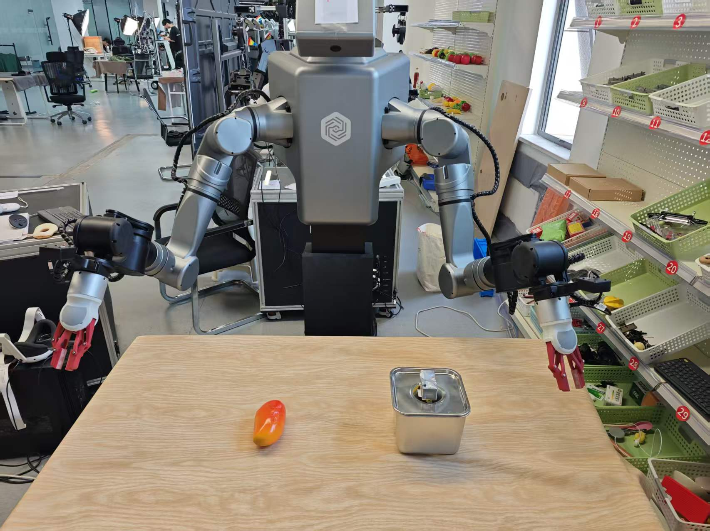
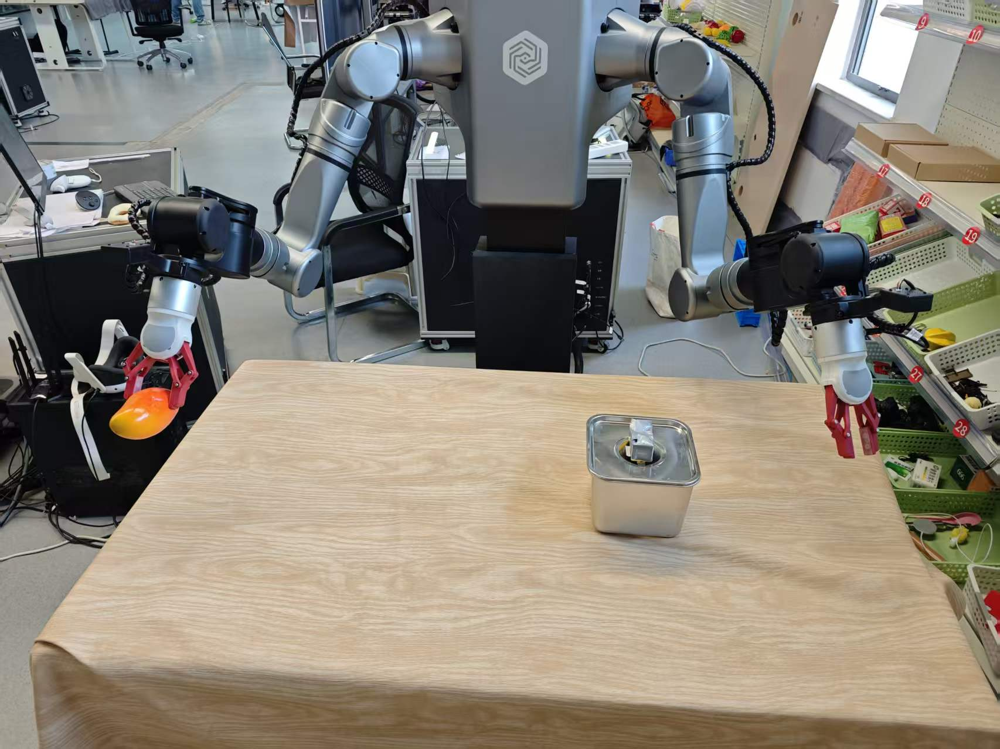

EXP-04 · 8 学时
真机推理与分拣复现
加载训练好的 checkpoint，三终端拉起 ROS2 推理节点，50Hz 决策 100Hz 执行，让双臂在真实桌面复现「左黑右银、各归各格」的自主分拣。
00课程节奏：五星学习法 · 8 段微课（每段 ≤ 15 min）
本实验按五星学习法组织：先抛出"开闸猛跳/放错格"的推理翻车现场聚焦问题，再用反射弧与新手手动挡激活旧知，接着对照硬件实物与感知-决策-执行闭环动画示证新知，然后动手三终端启动并练推理控制台应用新知，最后借常见问题与思考题融会贯通。全程切成 8 段微课、每段不超过 15 分钟，段间停顿 1~2 分钟消化；纯讲授合计约 100 分钟，其余课时用于动手实操与个别辅导。
① 聚焦问题
课段 1 · 12 min
"开闸猛跳/放错格"推理翻车现场
② 激活旧知
课段 2 · 8 min
反射弧·新手手动挡·缓抬离合
③ 示证新知
课段 3~4 · 27 min
本体/checkpoint/场景 + 感知决策执行闭环动画
④ 应用新知
课段 5~7 · 40 min
三终端启动·关键命令·推理控制台
⑤ 融会贯通
课段 8 · 13 min
排障收口·拓展·思考题拔高
| 课段 | 五星阶段 | 时长 | 对应章节 | 本段任务 |
|---|---|---|---|---|
| 课段 1 | 聚焦问题 | 12 min | §01 + §02 前半 | 抛出"开闸猛跳/放错格"推理翻车，明确本课目标 |
| 课段 2 | 激活旧知 | 8 min | §02 后半 | 用反射弧/新手手动挡激活闭环与平滑旧知 |
| 课段 3 | 示证新知 | 15 min | §03 | 对照实物认识本体/checkpoint/复现场景与安全设备 |
| 课段 4 | 示证新知 | 12 min | §06 | 看感知-决策-执行闭环动画，理解反馈与闭环 |
| 课段 5 | 应用新知 | 15 min | §04 前半 + §05 ①② | 配置检查→三终端拉起，对应配置与启动命令 |
| 课段 6 | 应用新知 | 15 min | §04 后半 + §05 ③ | 空跑→开闸→复盘评估，对应推理控制命令 |
| 课段 7 | 应用新知 | 10 min | §07 | 推理控制台模拟器，练 DRY_RUN 与开闸顺序 |
| 课段 8 | 融会贯通 | 13 min | §08~§10 | 排障收口，拓展与思考题拔高迁移 |
讲课提示：课段 1/2 以讲授 + 提问为主；课段 3~4 用实物 + 动画；课段 5~6 边看视频边动手；课段 7 学员独立完成；课段 8 答疑拔高。段间停顿 1~2 分钟。
01学习目标课段 1 · 聚焦问题 · 12 min
- 读懂推理节点架构：三路相机 + 16 维关节状态 → 预处理 → ACT select_action → 后处理平滑 → 发布。
- 掌握 DRY_RUN 仿真验证与 ramp 起点准备，理解三层平滑如何杜绝上电跳变。
- 独立完成三终端启动与 /model_ifrun 服务开关操作，会看 step=0/10/20 推理日志。
- 按案例复盘方法评估复现效果：环境一致、采集量与训练步数达标、成功判据明确。
02原理：感知 → 决策 → 执行的毫秒闭环课段 1 收尾 + 课段 2 · 激活旧知 · 8 min
❓ 聚焦问题（课段 1）学员最怕的翻车：一开 /model_ifrun 双臂猛地一跳，差点撞坏零件——回头查才发现 ramp 没准备、当前位姿离采集起点差太远。或者抓得起却放错格：左手把银件塞进了黑格。问题出在推理的安全机制与数据一致性。带着这个痛点学完整课——到课段 6 你会亲手让双臂稳稳分拣。
推理就像「熟练工的反射弧」：感知（三路相机拍下此刻画面 + 关节编码器读出 16 维状态）→ 决策（ACT 把观测喂进网络，一次吐出 100 步动作块存入 FIFO 队列按帧取用）→ 执行（后处理把动作限幅平滑后发给双臂）。50Hz 推理、100Hz 发布——决策不必每毫秒重算，但执行必须时刻柔顺。
恒等映射
本课程数据集未做 cyclic-shift，16 维状态直通：L0-L6 + 夹爪 + R0-R6 + 夹爪，训练/推理完全一致。
三层平滑
5 帧滑动窗口 + EMA（α=0.15）+ 步长限幅（MAX_ARM_STEP_RAD=0.003、MAX_GRIP_STEP=0.02），防抖防突跳。
ramp 起步
start_cmd 取当前实测关节弧度起步渐升，避免从零点硬冲——像起步缓抬离合。
双闸门
DRY_RUN=True 只跑仿真不下发；/model_ifrun 服务 true/false 随时接管/交还，双重保险。
↺ 激活旧知（课段 2）回忆两件旧事：① 反射弧——眼睛看到→大脑决定→手脚执行，本课的感知-决策-执行毫秒闭环就是机器人版的反射弧；② 新手开手动挡——脑海里有套路但脚下要靠缓抬离合防熄火，ramp 起步与三层平滑就是机器人的离合，DRY_RUN 与 /model_ifrun 则是教练的副刹。
生活化类比：真机推理像「刚拿到驾照的新手」——脑海里的动作块是背熟的套路（chunk_size=100），脚下还要靠限滑（三层平滑）防止一脚地板油；教练的副刹就是 DRY_RUN 与 /model_ifrun 两个开关。
推理配置要点：ACT 不含 PaliGemma tokenizer、observation 字典不含 task 字段、状态为 16 维向量。
DRY_RUN 开关控制是否真下发动作——强烈建议首次推理先用 DRY_RUN 验证。节点运行机制：fixed 版恒等映射 → 安全机制分层 → ROS2 三类接口：订阅（/camera 图像、/joint_states 关节角）+ 发布（/cmd_joints 动作）+ 服务（/model_ifrun 开关）。
模型加载与 ramp：
MODEL_PATH 指定 checkpoint（如 outputs/sort/ACT/checkpoints/050000/pretrained_model），准备阶段 start_cmd 取当前实测弧度渐升，杜绝起点跳变。
03硬件与材料课段 3 · 示证新知 · 15 min
LDT01-STD 本体
双从动臂 + 双夹爪 + 三路在线相机 + 4060 Ti 16GB 工控机，与采集时同一台、同一线序。
checkpoint
MODEL_PATH 示例指向 output/act_fac/050000/pretrained_model（EXP-03 训练产物）。
复现场景
与采集完全一致的桌面、收纳盒位姿、黑/银零件；开工前卷尺复测距离。
安全设备
急停按钮、2 米半圆清场、双人值守（一人盯程序一人盯机械臂）。
模型加载与 ramp 准备：三终端启动 ROS2 推理节点后，
MODEL_PATH 指向 checkpoint 目录，准备阶段 start_cmd 取当前实测弧度渐升——像起步缓抬离合，杜绝起点跳变。
04操作步骤：三终端启动与复现评估课段 5~6 · 应用新知 · 2×15 min
S1DRY_RUN 验证
True 空跑：日志/动作正常
True 空跑：日志/动作正常
→
S2三终端拉起
robot → node → service
robot → node → service
→
S3开闸推理
/model_ifrun true
/model_ifrun true
→
S4复盘评估
150 采集 × 500000+ 步
150 采集 × 500000+ 步
- 配置检查：修改 MODEL_PATH 指向目标 checkpoint；首次先保持 DRY_RUN=True。
- 终端 1：01start_robot_act.sh 启动机器人侧；终端 2：激活环境后运行 lerobot_inference_node_act.py，观察 ramp 准备打印。
- 终端 3：ros2 service call /model_ifrun ... "{data: true}" 开启推理，step=0/10/20 日志滚动即正常；false 即停。
- 空跑合格后置 DRY_RUN=False 重进节点，清场 2 米半圆、双人到位再开闸，观察双臂自主分拣。
- 停止与接管：服务 false 停推理；异常立即急停（故障码 61445 按手册复位）。
- 复现评估：复盘案例口径——采集 150 次左右、训练步数 500000 步以上、桌面环境一致；判据：机械臂能正常将零件放入收纳盒中即实验成功。
开闸前 60 秒检查清单（双人逐项口述确认）：
- 桌面布局、收纳盒位置与采集现场一致（卷尺复测）。
- MODEL_PATH 指向的 checkpoint 存在且为本次目标步数。
- DRY_RUN=True 空跑已完成，step 日志节奏正常、无报错。
- 急停按钮在安全员手中，2 米半圆清场完成。
- /model_ifrun 服务出现在 ros2 service list 中。
- 双臂当前位姿与采集起点接近（ramp 才能平滑接管）。
开闸动作：激活 lerobot 环境 → 运行推理节点 →
ros2 service call /model_ifrun std_srvs/srv/SetBool data:\{data: true\} 下发 true/false 控制自主分拣起停。质量回溯：采集中误差点「本次采集失败」——该组不计入训练；复盘时据此核对有效样本量是否达标（训练集数量 = 采集总数 - 失败标记数）。
云端联动：采集数据经上传按钮传至云服务器，一键安装后解压转换数据，训练与推理共享同一数据出口。
成功判据（工厂案例 §5 复现效果评估原文）：将环境恢复至采集阶段，桌面环境与预设一致，机械臂能正常将零件放入收纳盒中则实验成功——黑件左格、银件右格，动作连贯不交叉。若失败，先检查桌面环境参数与预设是否一致，其次检查采集与训练次数是否足够（相对简单任务建议采集 150 次左右、训练步数 500000 步以上）。
05关键命令随课段 5 / 6 对照使用
# ① 配置（04-推理） MODEL_PATH="/home/lindenbot/lerobot-0.4.1/output/act_fac/050000/pretrained_model" DRY_RUN = True # 首跑空仿真；验证无误后改 False 真下发 # ② 三终端启动（原文 04-推理 运行方法） 终端1 bash /home/lindenbot/iflytek_armtele_project/start_bash/04model_run_demo/01start_robot_act.sh 终端2 bash /home/lindenbot/lerobot-0.4.1/run_act_node.sh 终端3 source /home/lindenbot/iflytek_armtele_project/install/setup.bash ros2 service call /model_ifrun std_srvs/srv/SetBool "{data: true}" # 启动 # ③ 推理进行/停止 ros2 service call /model_ifrun std_srvs/srv/SetBool "{data: true}" # 开 ros2 service call /model_ifrun std_srvs/srv/SetBool "{data: false}" # 停 # 日志出现 mode=1 切换与 step=0/10/20 输出 = 推理循环正常
🖥️ 启动日志对照（DRY_RUN=True 干跑，原文 04-推理）
🚀 LeRobot ACT 推理节点启动
⚠️ DRY_RUN=True：只打印动作，不发布到机械臂
✓ 相机设备: /dev/cam_head
✓ 相机设备: /dev/cam_left
✓ 相机设备: /dev/cam_right
📦 加载 ACT 模型 ...
🖥️ 设备: cuda
✅ ACT 模型/处理器加载成功 (chunk_size=100)
📡 创建订阅者 ...
✓ 机械臂状态: /cerebellum_sdk/arm/joint_states
✓ 夹爪状态: /slave/gripper/{left,right}/states
📤 创建发布者 ...
✓ 臂命令 /cerebellum_sdk/arm/joint_commands + 夹爪命令
✅ 节点初始化完成，等待 /model_ifrun 启动指令
🎬 启动推理
🔎 /joint_states 实际关节名(14): [left_shoulder_pitch_joint, left_shoulder_roll_joint, ...]
🪜 ramp 起点(ROS顺序) L_pitch=+0.123 R_pitch=-0.456 -> 目标 L_pitch=+0.130 R_pitch=-0.450
🔄 推理循环启动 (50 Hz)
📡 发布线程启动 (100 Hz, slew限速)
step=0 L_arm[+0.130 -0.200 +0.100 -0.050 +0.300 +0.010 -0.150] L_grip=0.750 ...
🔧 DRY_RUN=False 真机切换把 `DRY_RUN` 改为 False 后重启节点，启动日志会多一行
🔴 DRY_RUN=False：将真正发布命令到机械臂！；开始推理后出现 ✅ 已切换臂控制模式 mode=1；停止时打印 ⏸️ 停止推理 / 🛑 推理循环结束 / 🛑 发布线程结束。开闸前务必 2 米半圆清场、双人手不离急停。06动画：感知-决策-执行闭环课段 4 · 示证新知 · 12 min
动画：感知→决策→执行再回到感知的循环——光点闭环一圈，桌面上少一个待分拣零件。
观察反馈箭头为什么重要？没有闭环的「开环播放」会在第一次抓偏之后一路错到底；闭环每一圈都用新观测修正偏差。
07互动：推理控制台模拟器课段 7 · 应用新知 · 10 min
依次操作开关，观察控制台反馈（试试不改 DRY_RUN 直接开闸会发生什么）
节点未启动：先配置 DRY_RUN，再按「终端1→2→3」顺序开闸。
控制台背后的真实日志（04-推理）：启动打印 ramp 准备（start_cmd=当前实测弧度），切 true 后出现 mode=1 与 step=0/10/20 逐级输出，切 false 停止打印并交还控制权。
08常见问题课段 8 · 融会贯通 · 13 min
Q 一开闸双臂猛跳？
检查 ramp 是否被绕过、当前姿态与采集起点是否差太远；三层平滑参数（0.003 / 0.02 / α=0.15）是否被改动。
Q 服务调用无响应？
终端 2 推理节点没起来或 source 错环境；先确认 ros2 service list 里有 /model_ifrun。
Q 抓得起但放错格？
典型数据病：采集时左右分工被破坏，或复现场景与采集不一致（盒位移动）。回 EXP-02 查有效样本。
Q 动作一顿一顿？
推理频率掉线或 FIFO 队列空转：查 GPU 占用与日志节拍；先回 DRY_RUN 看决策输出本身是否平滑。
09拓展阅读课段 8 · 融会贯通
- 04-推理 §节点架构：get_observation / run_inference_once / _slew_toward 三段源码逐行精读。
- command/9_inference_dual_arm.sh：工程脚本版的双臂推理入口与环境准备。
- LDT-01 手册 §模型推理流程：ENGINE_PATH / PKL_PATH / MODEL_RUN_SPEED 与轨迹重播的玩法。
- LDT-01 手册 §Q&A：急停故障码 61445（STO）复位流程与主从不一致的排查顺序。
- 《聆动机器人案例-家庭场景》复盘：换任务后如何用同一套推理栈快速验收。
- 00-硬件参数 §行业课程表：物料分拣场景对标的职业能力项（主从遥操作、视觉抓取、轨迹学习）。
10思考题 · 自测课段 8 · 融会贯通
✅ 完成成果
真机自主分拣连续 ≥10 轮黑件左格、银件右格，日志与视频留档，达到案例成功判据。
🧠 原理收获
说清 50Hz/100Hz 双频率、三层平滑与 ramp 各自防的是哪类事故。
🛠 技能收获
会配置 MODEL_PATH / DRY_RUN、三终端启动、服务开关与急停复位全流程。
📐 评分速览
交互模拟器 20% + 真机复现表现 50% + 思考题 30%。
思考 1三层平滑（滑窗 → EMA → 限幅）中去掉任何一层各会怎样？按「噪声毛刺 / 持续偏置 / 瞬时跳变」对号入座。
思考 2案例要求「训练步数在 500000 步以上」且「桌面环境一致」。若复现时盒位比采集时挪了 5cm 就失手，这暴露了行为克隆的什么短板？可能的补救思路有哪些？